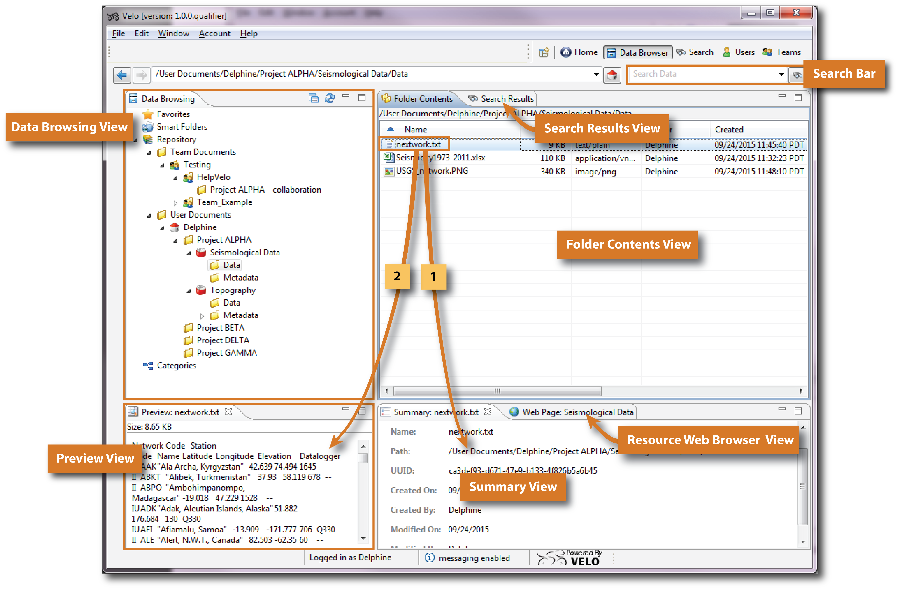
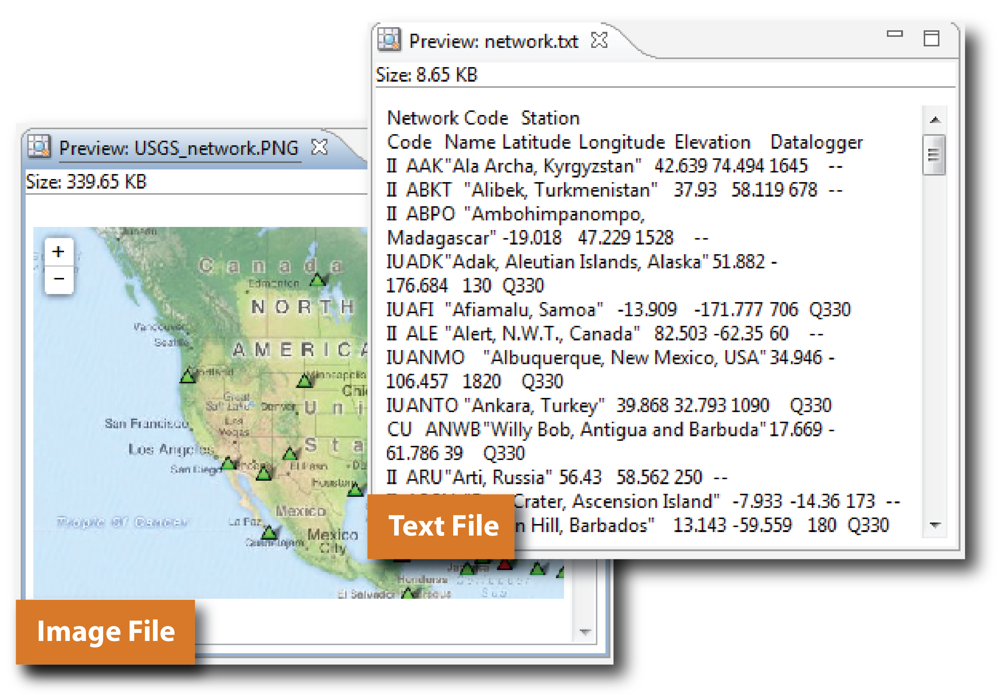
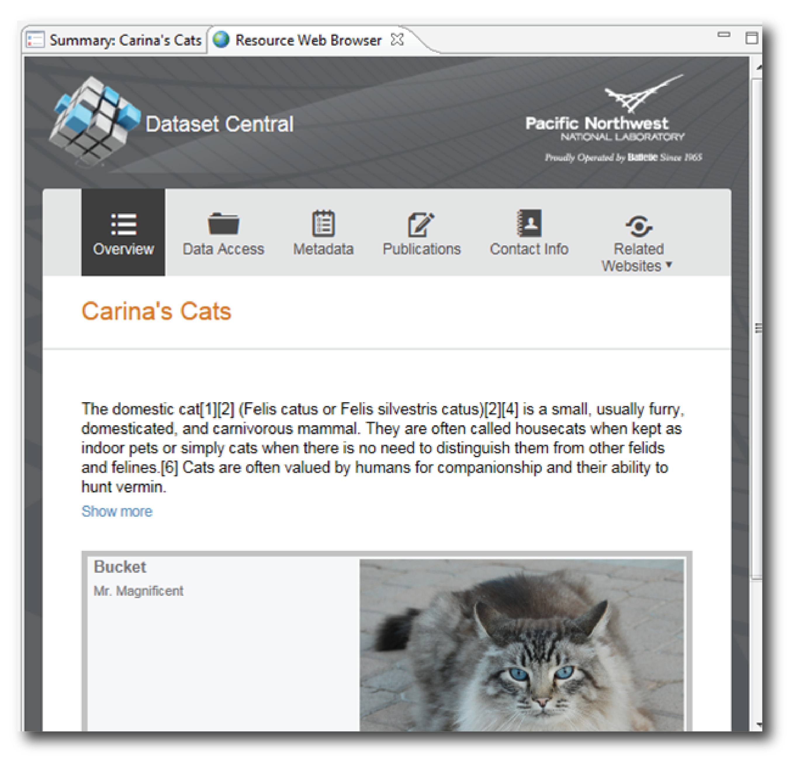
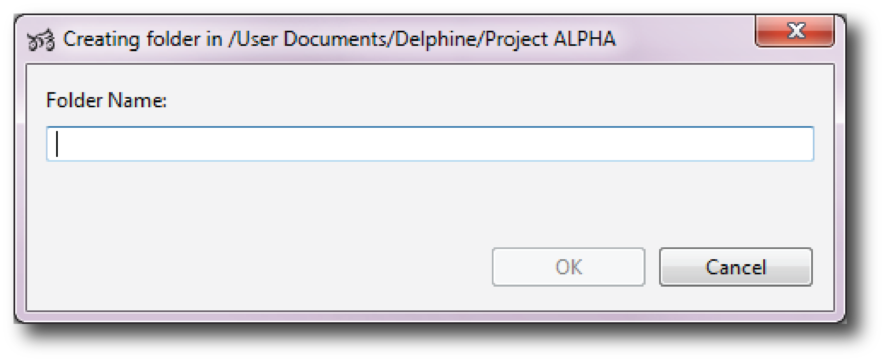
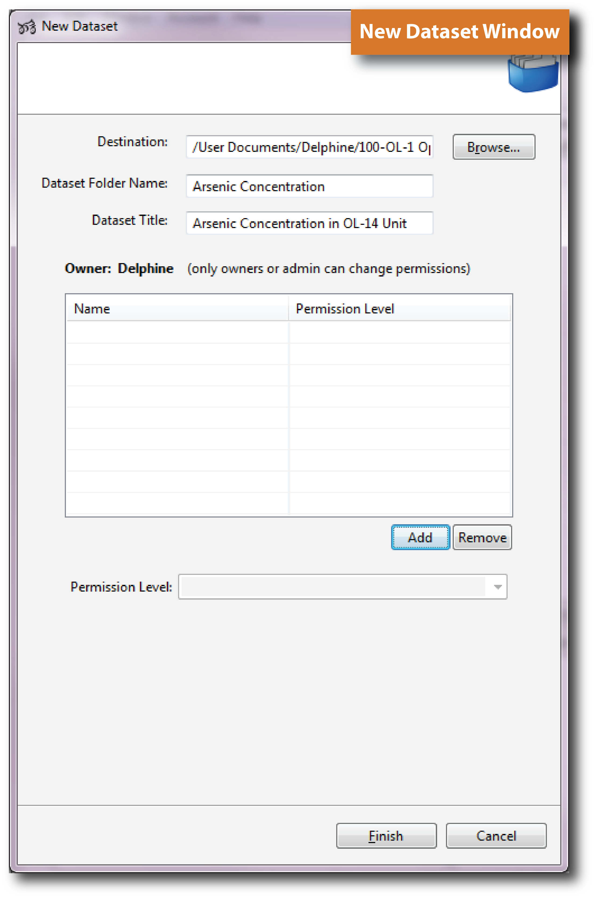

The Data Browser Perspective holds a central place in Velo for managing datasets. Direct access to the perspective is provided on both the  Home Screen, as well as on the Perspective Short Cut Bar (labelled Data Browser). The Data Browser Perspective is by default organized into six main views (Figure 1):
Home Screen, as well as on the Perspective Short Cut Bar (labelled Data Browser). The Data Browser Perspective is by default organized into six main views (Figure 1):
Each of these Views are described in the following sections.

Figure 1. Data Browser Perspective Structure.
When the Data Browser perspective is opened, the directory tree structure appears in the Data Browsing View (Figure 1), under the  Repository directory. The Repository directory is divided into two folders: the Team Documents Folder and the User Documents Folder.
Repository directory. The Repository directory is divided into two folders: the Team Documents Folder and the User Documents Folder.
In the Team Documents folder, subfolders are created for each team the user belongs to and are preceded by the team folder icon .
In the User Documents Folder, the directory tree structure is displayed for both shared and private user workspaces. Shared workspace are indicated with the  icon while private workspace are preceded by the
icon while private workspace are preceded by the  icon (Figure 1).
icon (Figure 1).
Permissions can be modified by right-clicking on the home folder name, and selecting Properties>Permissions. |
A user can create any number of folders and even store folders inside other folders (subfolders) in order to organize his work. Folders are shown with the  icon. It is important to differenciate a basic folder
icon. It is important to differenciate a basic folder  from a Dataset folder . Unlike a basic folder, when a dataset is created the user is given tools to prepare the dataset to be published.
from a Dataset folder . Unlike a basic folder, when a dataset is created the user is given tools to prepare the dataset to be published.
Note that the Dataset Publishing Process is described in details in the XXXXX section. |
The Favorites section of the view provides a serie of shortcuts that are shown in the top section of the Data Browsing View (Figure 1). Favorites may be an important feature especially when working on several research projects and/or a broad list of folders and files.
Adding new shortcuts in the Favorites folder can be done in multiple ways. One way is to drag a selected item to the Favorites section, another is to copy and paste an item from the directory tree to the Favorites folder
 Smart Folders
Smart Folders
Need to add explanation
Need to add explanation
The Folder Contents View provides the detailed list (e.g, name, type, size, date of creation) of files included under the item highlighted in the Data Browsing View.
The Summary View provides detailed information regarding the item selected in the directory tree structure (Figure 1, [1]). The Summary View will always provide general information including the path of the file, the author, the date of creation or date of modification of an item.
This pane shows a preview of the file (text or image) selected in the Folder Contents View (Figure 1, [2] and Figure 2).

Figure 2. Preview of an Image File and a Text File in the Preview View
Right-click in the Preview Pane and choose Find... from the pop-up menu to see a Find dialog for entering a search query and finding it in the preview display. |
When browsing through numerous files and folders, getting lost inm the directory tree structure may be easy. The path bar located at the topo of the perspective allows the user to know where the file or folder selected is located (Figure 1) . From this location, the user is given the possibility to search data using the Search bar (Figure 1).
The Search option searches the documents to which the user has authorized access. This includes all documents, folder names and file names.When the Seach is completed, the Search Results View lists documents found by the search.
The Resource Web Page view shows users web pages that are associated with the selected dataset. Several web pages are associated to a single resource, each related to a category of information a user has to provide for the selected dataset (Figure 3):

Figure 3. Resource Web Browser View Example.
The Data Browser perspective offers efficient tools to manage and organize documents and datasets.
A user can create any number of folders and even store folders inside other folders (subfolders). To create a new folder, highlight in the directrory tree the item where the new folder is to be located, two ways are possible:
A window will pop up so that the new folder name can be entered (Figure 4).

Figure 4. New Folder Name Window.

Figure 5. New Dataset Window.
When cliking on Finish, the Dataset Editing perspective will pop-up, allowing the user to prepare the dataset to be published. A step by step help is provided.
Data can be imported from local machines, or remote servers to a selected destination .
To import data, highlight the destination folder. Two options then follow:
If running Velo on a Windows machine, files from the Windows File Explorer can be copied to Velo by dragging them to Velo's directory tree. |
An Import Files window will pop up. From this window, the user can change the destination by clicking Browse and can select the file(s)/folder(s) to be imported by clicking on Select files... . A new window opens and the user is given the option to navigate in the local machine or remote servers and select the items to be imported by using the checkboxes (Figure 5).
Figure 6. Import Files Window.
It is also possible to export data located in Velo (in shared or Private Workspaces) to a local machine.
To accomplish the data export, two options are available:
The File Export Wizard window will pop up, allowing the user to select both the items to be exported and the destination folder.
Basic functions such as copy, cut and paste file(s) or folder(s) are also available in the Data Browser perspective.
These options are accessible when right-clicking on a item.
Permissions for files, folders and datasets can also be set within Data Browser Perspective (Figure 7, [1]). The user can assign different levels of permissions for either a single user, or a team (Figure 7, [2]):
The rights allowed for each category are displayed when selecting the permission type.
Figure 7. Setting Permissions
Data Browser perspective can be customized with other views that might be useful when working with Velo. Two views that may be commonly used are the
To open these views, select Window>Open View and select the View to open.
This View provides a utility for comparing two different files. This isuseful for identifying differences between individual text files.
To open the Scratch Pad View, select Window>Open View> Scratch Pad. This will launch the Scratch Pad viewer, which will be placed in the bottom right hand corner of the perspective.
To compare two different text files, the following operations are required:
The Comments View allows one or several users to leave written comments for the selected item in the directory tree.
To open the Comments View, select Window>Open View> Comments. To add a comment, click on the  icon.
icon.
The comments can be edited by clicking on  or deleted by clicking on
or deleted by clicking on  .
.
Note that comments can only be displayed when the Comments View is active in the perspective. |